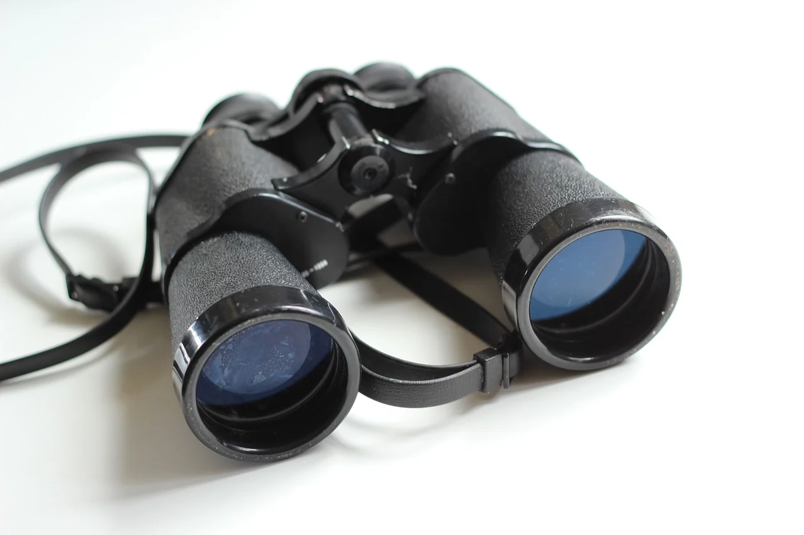

O Hobbie da Astronomia
O hobbie da Astronomia é um hobbie muito interessante e que te faz ensinar muitas coisas porém é algo que pode exigir dinheiro, através desse hobbie você aprenderá sobre o:
- Universo
- Estrelas
- Constelações
- Planetas, e muitas outras coisas
Origem
Esse hobbie tecnicamente já existe a muito tempo, pois os povos da antiguidade observavam o céu e tinham suas próprias ideias sobre o funcionamente dos astros e como eles eram importantes e influentes em suas vidas, em algumas civilizações a astronomia tinha um aspecto religioso e cultural. Nas suas observações, ele descobriram que:
- As fases da Lua no momento "influenciavam" o cultivo de alimentos.
- As constelações presentes no céu diziam se a época era boa para o cultivo de certos alimentos.
- Atráves da posição dos astros, conseguiam criar calendários corretos.
Modernidade
Nos dias atuais, esse hobbie ainda é muito praticado e a busca de inforamações sobre ele se tornou muito mais fácil, devido a internet. A tecnologia atual também agora permite o uso de equipamentos próprios para a observação do céu e dos objetos celestes. Tais equipamentos são:
- Binóculos
- É um equipámento com o mesmo uso de lunetas, porém são mais fracos e mais baratos, mas uma de alta qualidade pode mostrar as crateras da Lua em boa definição e permite admirar com mais detalhes algumas constelações, estrelas, planetas etc.

- Planisfério Celeste
- Por mais que não seja algo super moderno, é um equipamento que facilita muito a admiração e o entendimento do céu. Ele é um tipo de mapa que mostra quais constelações e astros estarão visíveis em determinadas datas. Não há necessidade de compra desse equipamento, pois essas informações podem ser achadas na internet.

- Telescópio/Lunetas Astronômicas
- É um equipamento que permite vizualizar o céu e os astros com definições muito mais altas que o binóculos. Ele é caro e a compra dele só deve ser realizado quando tiver conhecimento suficiente do hobbie e sabe como manuseá-lo.